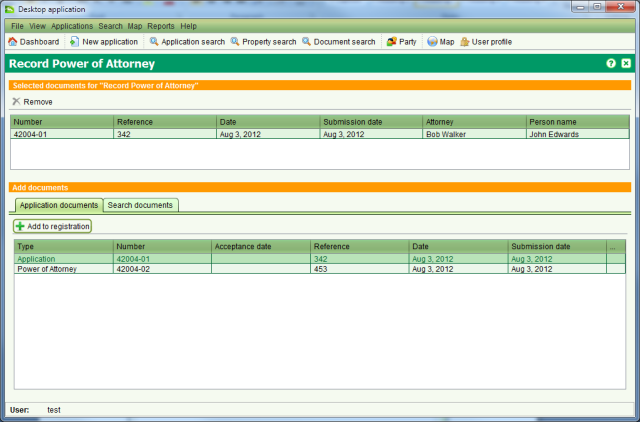
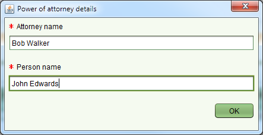

Certain document types, specifically Power of Attorney and Standard Memorandum must first be
registered in SOLA before they can be referenced by an application to support or justify a
property transaction. The Document Registration screen lets you register these official
documents as well as deregister them once they are revoked / cancelled. To access the
Document Registration screen you need to lodge an application containing one or more of the
following services; Record Power of Attorney, Record Standard Memorandum, Cancel Power of
Attorney or Cancel Standard Memorandum. Once the application is lodged and assigned, you then
need to Start
the service from the Application Details Services tab.
Start
the service from the Application Details Services tab.

Document Registration
Before accessing the Document Registration screen, add the document to register to the
application so that it will appear in the Application documents list. To register a document,
select the document from the Application documents list and click Add to registration. You can
add multiple documents for registration if required. If you mistakenly add a document to the
registration list you can remove it using
Add to registration. You can
add multiple documents for registration if required. If you mistakenly add a document to the
registration list you can remove it using Remove.
Remove.
When adding a Power of Attorney document for registration, you will also be prompted to enter the Attorney name as well as the name of the person the Power of Attorney applies to (i.e. the Grantor).

Power of Attorney Details